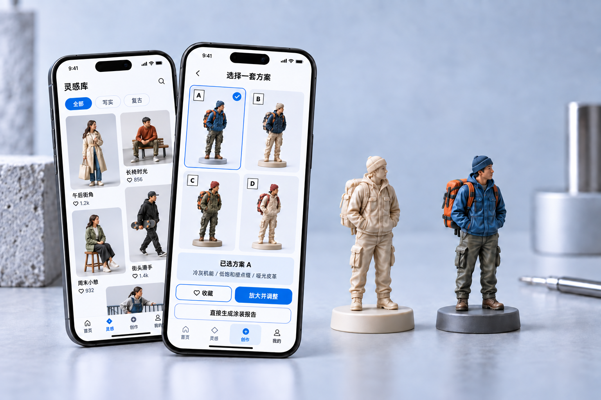

有参考，却难以组合
喜欢一张图片，不代表已经想清楚它的颜色和材质如何用在自己的模型上。

微缩涂装的创作不止是选择一种颜色，还需要考虑不同部位的搭配、材质表现与整体风格。本项目把探索环节前移到数字工作台，让用户先形成可讨论、可修改的视觉方案，再进入实体试色。
喜欢一张图片，不代表已经想清楚它的颜色和材质如何用在自己的模型上。
人物设定、主色系和材质要求混在一起，需要被整理成明确的创作输入。
选择方案只是开始。创作者还需要对比、重绘局部，并保留调整过程。
围绕「输入—探索—选择—细化」组织创作路径。首页承接继续创作，灵感库积累参考，创作页推进任务，「我的」收纳已有方案。
提交白模照片，查看清晰度、主体占比、光照和构图建议。
选择人物设定、风格和色系，补充材质要求与参考灵感。
查看任务进度，对比多个方案，再选定一个方向继续细化。
通过局部重绘调整细节，保留版本，保存项目与导出图片。
从准备输入，到明确方向，再到比较与细化。三个关键步骤使用统一屏幕比例呈现，点击可放大查看。界面为作品集展示示意。
上传入口同时提供个人照片和演示白模两条路径，让用户可以带着自己的任务开始，也可以先了解流程。
在生成之前呈现照片检查与裁切环节，把影响后续效果的输入问题提前暴露出来。
人物设定、视觉风格、主色系、具体颜色与补充要求分层呈现。用户既能快速选择，也能保留自己的表达。
灵感库可以按风格、色系或材质筛选，并把选中的素材加入创作参考，让「看见喜欢的」连接到「开始做自己的」。
以方案对比帮助用户选择方向，再通过画笔、擦除、撤销和遮罩编辑进入局部重绘。
保存项目、导出图片与重新打开方案承接后续创作。页面保留 AI 生成标识和辅助建议，帮助用户理解数字效果与实体涂装之间仍需试色验证。
将参考素材、配色选择与编辑版本单独展开，展示界面中的信息层级。
用明确的色彩选择，补充抽象的风格表达。
在持续调整中，保留可回看的创作过程。
创作步骤、生成进度、额度提示与失败重试构成任务反馈。页面提供离开后继续查看任务的提示，让等待过程有明确去向。
不仅关注成功结果，也把余额不足、网络失败与生成失败纳入交互状态。
产品采用浅色工作区与蓝色操作强调，使用分组表单、标签、色卡和底部导航组织信息。高频动作保持清晰，参考素材与创作结果占据主要展示空间。
当前成果体现在可访问的产品界面与流程组织。模型输出质量、真实任务完成率和时间收益，需要结合实际生成与用户使用继续验证。
首页、灵感库、创作页与个人方案形成相互衔接的工作区。
风格、色系、材质要求与参考素材被组织为明确的创作输入。
界面覆盖方案对比、局部重绘、版本记录与结果保存。
检查姿态、服装结构和局部重绘影响范围，建立输出质量的验收样例。
观察上传至首次保存的完成情况，定位输入、等待与编辑中的阻碍。
邀请涂装使用者比对材质建议、部位色卡与实际材料表现，验证方案的可执行性。
版本边界：公开社区、投稿审核、委托匹配及购买入口在当前产品中标为暂未开放。本案例未将这些能力计入已完成成果。